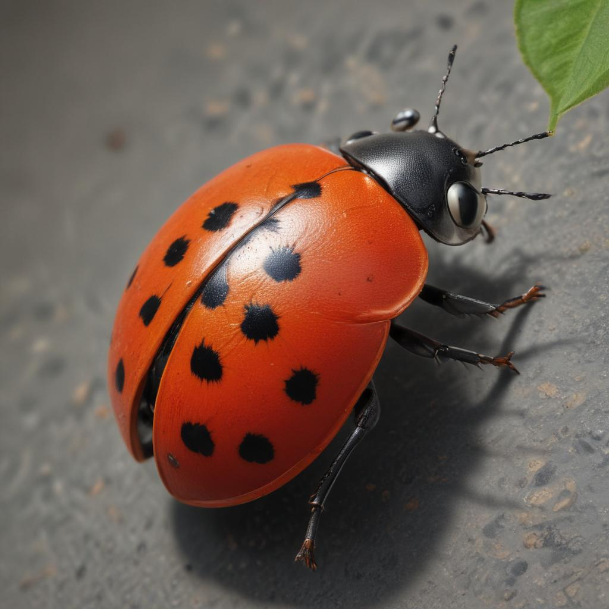
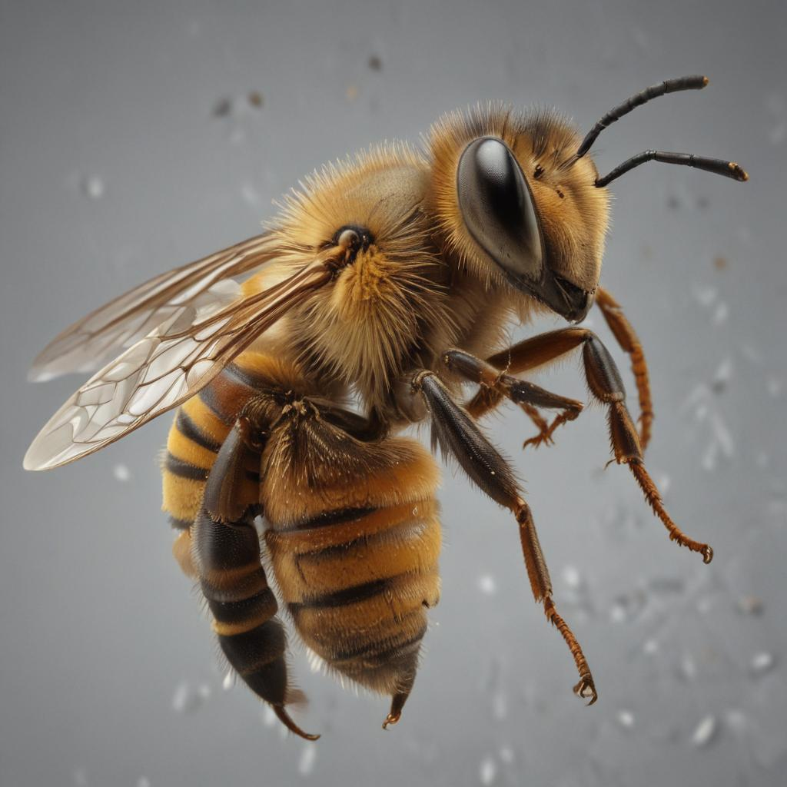
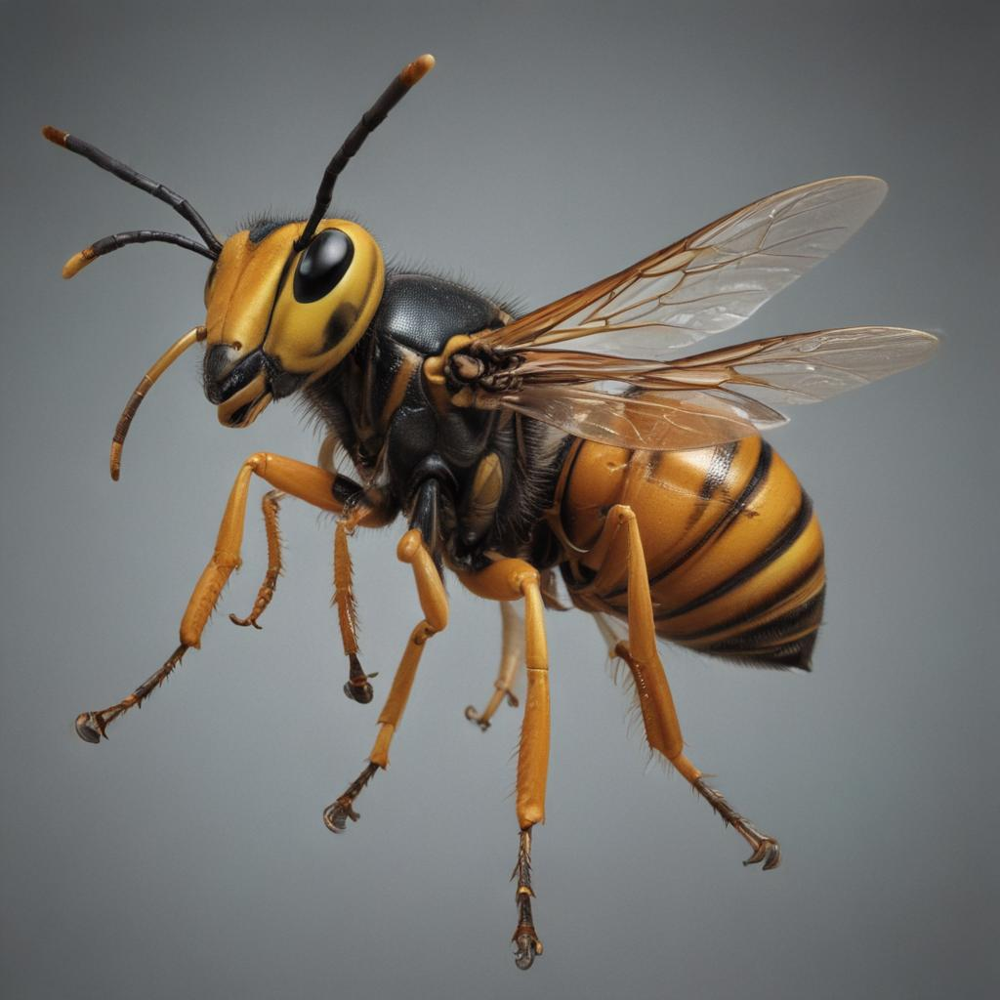
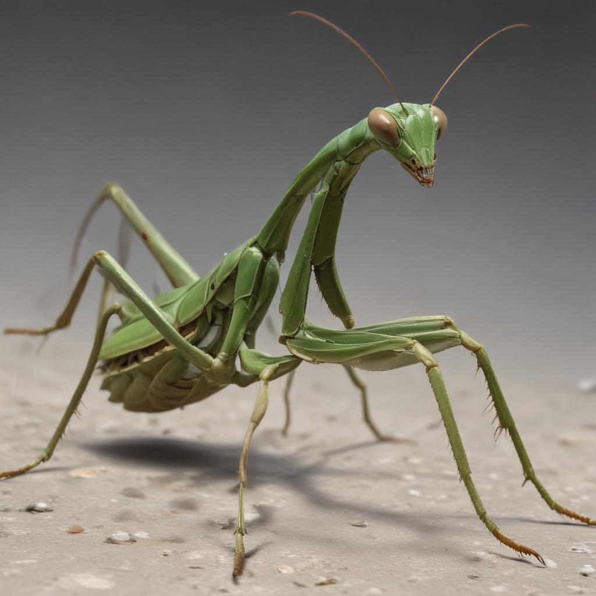
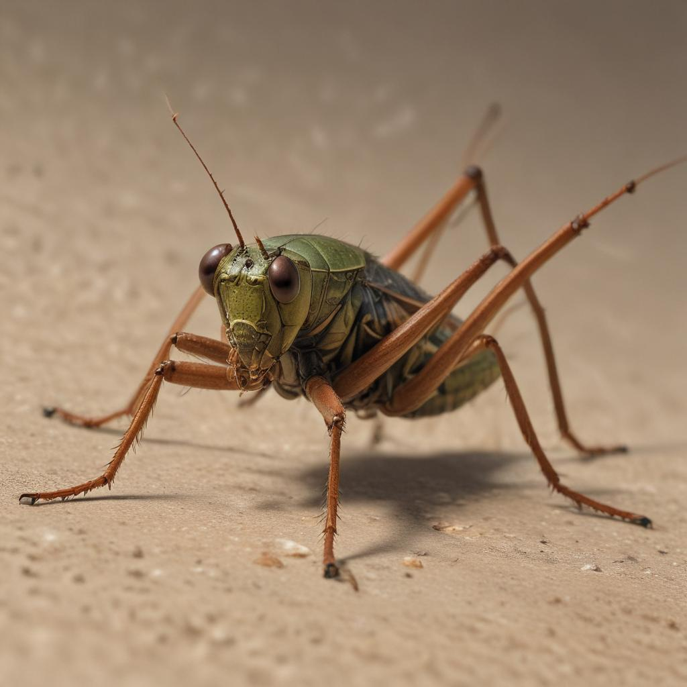

100가지 곤충 친구들을 만나보세요! 🐞
지구상에는 약 500만 종류의 곤충이 살고 있어요. 그 중에서 100가지 재미있는 곤충 친구들을 소개해 드릴게요!
곤충은 머리, 가슴, 배 세 부분으로 나뉘어 있고, 다리가 6개인 동물이에요.
곤충은 우리 생활과 자연에 매우 중요한 역할을 해요. 꽃가루를 옮겨주고, 흙을 비옥하게 만들어주고, 다른 동물들의 먹이가 되기도 해요.
아래에서 다양한 곤충들을 카테고리별로 만나보세요!

곤충 카테고리






아틀라스나방
세계에서 가장 큰 나방으로, 날개 폭이 25-30cm에 달해요. 날개에는 뱀의 머리처럼 생긴 무늬가 있어서 적을 놀라게 할 수 있어요. 성충은 입이 없어서 먹이를 먹지 않고 살아요.
자세히 보기

헤라클레스장수풍뎅이
세계에서 가장 큰 딱정벌레로, 수컷의 몸길이가 17cm까지 자라요. 수컷은 긴 뿔로 다른 수컷과 싸워 영역을 지키고, 자기 몸무게의 850배나 되는 무게를 들 수 있는 힘이 있어요.
자세히 보기






대벌레
나뭇가지를 닮은 위장의 달인이에요. 몸이 가늘고 길며, 움직임도 나뭇가지가 흔들리는 것처럼 천천히 해요. 암컷은 수컷 없이도 알을 낳을 수 있는 신기한 능력이 있어요.
자세히 보기달나방
연두색 날개를 가진 아름다운 큰나방이에요. 날개 끝에 긴 꼬리가 있으며, 날개 폭이 11cm까지 자라요. 밤에 활동하며 달빛에 비친 모습이 아름다워서 '달나방'이라고 불러요.
자세히 보기
물장군
우리나라의 천연기념물인 큰 물벌레예요. 몸길이가 5-7cm이며, 앞다리로 작은 물고기나 올챙이를 잡아먹어요. 수컷이 등에 알을 지고 다니면서 보살피는 특이한 습성이 있어요.
자세히 보기